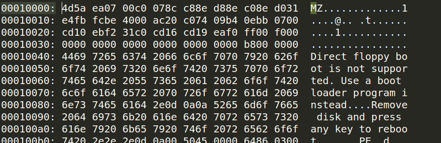
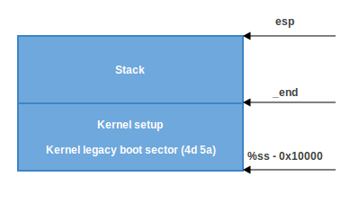
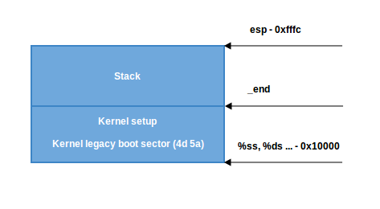

从引导程序到内核
Table of Contents
神奇的电源按钮，接下来会发生什么？
尽管这是一系列关于 Linux 内核的文章，在第一章并不会从内核代码开始
电脑在按下电源开关的时候，就开始工作。主板发送信号给电源，而电源收到信号后会给电脑供应合适的电量。一旦主板收到了 电源正常信号 ，它会尝试启动 CPU 。CPU 则 复位 寄存器 的所有数据，并设置每个寄存器的 预定值 。80386 以及后来的 CPUs 在电脑复位后，在 CPU 寄存器中定义了如下预定义数据：
IP 0xfff0 CS selector 0xf000 CS base 0xffff0000
这时处理器开始在 实模式 工作
需要退回一点去理解在这种模式下的内存分段机制
段式内存寻址
从 8086到现在的 Intel 64 位 CPU，所有 x86兼容处理器都支持 实模式
8086 处理器有一个20位寻址总线，这意味着它可以对0到 2^20 位地址空间（ 1MB ）进行操作 不过它只有16位的寄存器，所以最大寻址空间是 2^16 即 0xffff （64 KB） 由于不能用16位寄存器寻址大于 64KB 的内存，一种替代的方法被设计出来了
实模式使用 段式内存管理 来管理整个内存空间。所有内存被分成固定的 65536字节 64 KB 大小的小块。一个地址包括两个部分：
- 数据段起始地址
- 从该数据段起的偏移量
为了得到内存中的物理地址，要让 数据段 乘 16 并 加 上 偏移量 ：
PhysicalAddress = Segment * 16 + Offset
举个例子，如果 CS:IP 是 0x2000:0x0010 , 则对应的物理地址将会是：
>>> hex((0x2000 << 4) + 0x0010)
'0x20010'
不过如果使用16位2进制能表示的最大值进行寻址：0xffff:0xffff，根据上面的公式，结果将会是：
>>> hex((0xffff << 4) + 0xffff)
'0x10ffef'
这超出 1MB 65519 字节
所以实模式下， 因为CPU 只能访问 1MB 地址空间，通过禁用 A20线 后 0x10ffef 将变为 0x00ffef
跳转到BIOS
了解了实模式和在实模式下的内存寻址方式，来回头继续来看复位后的寄存器值
CS 寄存器 包含两个部分：可视段选择器和 隐含基址 。 结合之前定义的 CS 基址和 IP 值，逻辑地址应该是：
0xffff0000:0xfff0
这种形式的起始地址为EIP寄存器里的值加上基址地址：
>>> 0xffff0000 + 0xfff0
'0xfffffff0'
得到的 0xfffffff0 是位于 4GB - 16 字节 处的地址。 这个地方是 复位向量 Reset vector ，CPU在电源重置后期望执行的第一条指令的内存地址。它包含一个 jump 指令，这个指令通常 指向 BIOS入口点 。举个例子，如果访问 coreboot 源代码，将看到：
.section ".reset", "ax", %progbits .code16 .globl _start _start: .byte 0xe9 .int _start16bit - ( . + 2 ) ...
跳转指令 opcode - 0xe9 跳转到地址 _start16bit - ( . + 2) 去执行代码：
- reset 段是 16 字节代码段， 起始于地址 0xfffffff0 src/cpu/x86/16bit/reset16.ld
因此 CPU 复位之后，就会跳到这个地址来执行相应的代码：
SECTIONS { /* Trigger an error if I have an unuseable start address */ _bogus = ASSERT(_start16bit >= 0xffff0000, "_start16bit too low. Please report."); _ROMTOP = 0xfffffff0; . = _ROMTOP; .reset . : { *(.reset); . = 15; BYTE(0x00); } }
现在BIOS已经开始工作了
引导扇区
在初始化和检查硬件之后，需要寻找到一个可引导设备。_可引导设备列表_ 存储 在 BIOS 配置中, BIOS 将根据其中配置的顺序，尝试从不同的设备上寻找引导程序。
对于硬盘，BIOS 将尝试寻找 引导扇区 。如果在硬盘上存在一个 MBR分区
- 那么引导扇区储存在 第一个扇区 512字节 的 头446字节
引导扇区的最后必须是 0x55 和 0xaa ，这2个字节称为 魔术字节 Magic Bytes ，如果 BIOS 看到这2个字节，就知道这个设备是一个可引导设备。举个例子：
; ; Note: this example is written in Intel Assembly syntax ; [BITS 16] [ORG 0x7c00] boot: mov al, '!' mov ah, 0x0e mov bh, 0x00 mov bl, 0x07 int 0x10 jmp $ times 510-($-$$) db 0 db 0x55 db 0xaa
这让 _QEM_U 使用刚才新建的 boot 二进制文件作为磁盘镜像
由于这个二进制文件是由上述汇编语言产生，它满足引导扇区(起始设为 0x7c00, 用Magic Bytes结束)的需求 QEMU将这个二进制文件作为磁盘镜像的主引导记录(MBR)
运行后看到:

在这个例子中，这段代码被执行在16位的实模式，起始于内存0x7c00，之后调用 0x10 中断打印 ! 符号 用0填充剩余的510字节并用两个Magic Bytes 0xaa 和 0x55 结束
可以使用 objdump 工具来查看转储信息：
$ nasm -f bin boot.nasm $ objdump -D -b binary -mi386 -Maddr16,data16,intel boot
一个真实的启动扇区包含了分区表，以及用来启动系统的指令，而不是像我们上面的程序，只是输出了一个感叹号就结束了 从启动扇区的代码被执行开始，BIOS 就将系统的控制权转移给了引导程序
再次强调，上面的引导程序是运行在 实模式 下的，因此 CPU 是使用下面的公式进行物理地址的计算的：
PhysicalAddress = Segment * 16 + Offset
在实模式下，CPU 只能使用16位的通用寄存器。16位寄存器能够表达的最大数值是： 0xffff ，所以按照上面的公式计算出的最大物理地址是：
>>> hex((0xffff * 16) + 0xffff)
'0x10ffef'
这个地址在 8086 处理器下，将被转换成地址 0x0ffef 。因为，8086 cpu 只 有 20位 地址线，只能表示 2^20 = 1MB 的地址，而上面这个地址已经超出了 1MB 地址的范围，所以 CPU 就舍弃了最高位
实模式下的 1MB 地址空间分配表：
0x00000000 - 0x000003FF - Real Mode Interrupt Vector Table 0x00000400 - 0x000004FF - BIOS Data Area 0x00000500 - 0x00007BFF - Unused 0x00007C00 - 0x00007DFF - Our Bootloader 0x00007E00 - 0x0009FFFF - Unused 0x000A0000 - 0x000BFFFF - Video RAM (VRAM) Memory 0x000B0000 - 0x000B7777 - Monochrome Video Memory 0x000B8000 - 0x000BFFFF - Color Video Memory 0x000C0000 - 0x000C7FFF - Video ROM BIOS 0x000C8000 - 0x000EFFFF - BIOS Shadow Area 0x000F0000 - 0x000FFFFF - System BIOS
在上面的章节中，CPU 执行的第一条指令是在地址 0xFFFFFFF0 处，这个地址远远大于 0xFFFFF 1MB
那么实模式下的 CPU 是如何访问到这个地址的呢？
coreboot 文档给出了答案:
0xFFFE_0000 - 0xFFFF_FFFF: 128 kilobyte ROM mapped into address space
0xFFFFFFF0 这个地址被映射到了 ROM ，因此 CPU 执行的第一条指令来自于 ROM，而不是 RAM
引导程序
在现实世界中，要启动 Linux 系统，有多种 引导程序 可以选择。比如 GRUB 2 和 syslinux 。Linux内核通过 Boot protocol 来定义应该如何实现引导程序
在这里将只介绍 GRUB 2
现在 BIOS 已经选择了一个启动设备，并且将控制权转移给了启动扇区中的代码，在例子中，启动扇区代码是 boot.img
因为这段代码只能占用一个扇区，因此非常简单，只做一些必要的初始化
然后就跳转到 GRUB 2's core image 去执行。 Core image 的代码请参考 diskboot.img，一般来说 core image 在磁盘上存储在启动扇区之后到第一个可用分区之前。core image 的初始化代码会把整个 core image （包括 GRUB 2的内核代码 和 文件系统驱动 ） 引导 到 内存 中。 引导完成之后，grub_main将被调用。
grub_main 初始化控制台，计算模块基地址，设置 root 设备，读取 grub 配置文件，加载模块。最后，将 GRUB 置于 normal 模式，在这个模式中， grub_normal_execute ( grub-core/normal/main.c ) 将被调用以完成最后的准备工作，然后显示一个菜单列出所用可用的操作系统。当某个操作系统被选择之后，*grub_menu_execute_entry* 开始执行，它将调用 GRUB 的 boot 命令，来 引导 被选中的 操作系统
就像 kernel boot protocol 所描述的，引导程序必须 填充 kernel setup header （位于 kernel setup code 偏移 0x01f1 处） 的必要字段。kernel setup header的定义开始于 arch/x86/boot/header.S：
.globl hdr hdr: setup_sects: .byte 0 root_flags: .word ROOT_RDONLY syssize: .long 0 ram_size: .word 0 vid_mode: .word SVGA_MODE root_dev: .word 0 boot_flag: .word 0xAA55
bootloader必须填充在 Linux boot protocol 中标记为 write 的 头信息 ，比如 type_of_loader ，这些头信息可能来自命令行，或者通过计算得到
在这里不会详细介绍所有的 kernel setup header，将在需要的时候逐个介绍 不过，可以自己通过 boot protocol 来了解这些设置
通过阅读 kernel boot protocol，在内核被引导入内存后，内存使用情况将如下表所示：
| Protected-mode kernel | 100000 +------------------------+ | I/O memory hole | 0A0000 +------------------------+ | Reserved for BIOS | Leave as much as possible unused ~ ~ | Command line | (Can also be below the X+10000 mark) X+10000 +------------------------+ | Stack/heap | For use by the kernel real-mode code. X+08000 +------------------------+ | Kernel setup | The kernel real-mode code. | Kernel boot sector | The kernel legacy boot sector. X +------------------------+ | Boot loader | <- Boot sector entry point 0x7C00 001000 +------------------------+ | Reserved for MBR/BIOS | 000800 +------------------------+ | Typically used by MBR | 000600 +------------------------+ | BIOS use only | 000000 +------------------------+
所以当 bootloader 完成任务，将执行权移交给 kernel，kernel 的代码从以下地址开始执行：
0x1000 + X + sizeof(KernelBootSector) + 1 # 个人以为应该是 X + sizeof(KernelBootSector) + 1 因为 X 已经是一个具体的物理地址了，不是一个偏移
上面的公式中， X 是 kernel bootsector 被引导入 内存的位置
在我的机器上， X 的值是 0x10000
可以通过 memory dump 来检查这个地址：

到这里，引导程序完成它的使命，并将控制权移交给了 Linux kernel 下面就来看看 kernel setup code 都做了些什么
内核设置
经过上面的一系列操作，终于进入到内核了 不过从技术上说，内核还没有被运行起来，因为首先需要正确设置内核，启动内存管理，进程管理等等
内核设置代码的运行起点是 arch/x86/boot/header.S 中定义的 _start 函数
在 _start 函数开始之前，还有很多的代码，那这些代码是做什么的呢？
实际上 _start 开始之前的代码是 kernel 自带的 bootloader
在很久以前，是可以使用这个 bootloader 来启动 Linux 的 不过在新的 Linux 中，这个 bootloader 代码已经不再启动 Linux 内核，而只是输出一个错误信息
如果运行下面的命令，直接使用 Linux 内核来启动，会看到下图所示的错误：
qemu-system-x86_64 vmlinuz-3.18-generic

为了能够作为 bootloader 来使用, header.S 开始处定义了 MZ 魔术数字, 并且定义了 PE 头，在 PE 头中定义了输出的字符串：
#ifdef CONFIG_EFI_STUB
# "MZ", MS-DOS header
.byte 0x4d
.byte 0x5a
#endif
...
...
...
pe_header:
.ascii "PE"
.word 0
之所以代码需要这样写，这个是因为遵从 UEFI 的硬件需要这样的结构才能正常引导操作系统
去除这些作为 bootloader 使用的代码，真正的内核代码就从 _start 开始了：
// header.S line 292 .globl _start _start:
其他的 bootloader (grub2) 知道 start 所在的位置（ _从 MZ 头开始偏移 0x200 字节 ），所以这些 bootloader 就会忽略所有在这个位置前的代码（这些之前的代码位于 .bstext 段中）， 直接跳转到这个位置启动内核：
// // arch/x86/boot/setup.ld // . = 0; // current position .bstext : { *(.bstext) } // put .bstext section to position 0 .bsdata : { *(.bsdata) }
.globl _start _start: .byte 0xeb .byte start_of_setup-1f 1: // // rest of the header //
_start 开始就是一个 jmp 语句
jmp 语句的 opcode 是 0xeb
这个跳转语句是一个短跳转，跟在后面的是一个相对地址 start_of_setup - 1f
在汇编代码中 Nf 代表了当前代码之后第一个标号为 N 的代码段的地址
在 start 标号之后的第一个标号为 1 的代码段中包含了剩下的 _setup header 结构 。在标号为 1 的代码段结束之后，紧接着就是标号为 start_of_setup 的代码段
start_of_setup 这个代码段位于 .entrytext 代码区 这个代码段中的第一条指令实际上是内核开始执行之后真正的第一条指令
下面来看一下 GRUB2 的代码是如何跳转到 start 标号处的。从 Linux 内核代码中，知道 _start 标号的代码位于偏移 _0x200 处。在 GRUB2 的源代码中可以看到下面的代码：
state.gs = state.fs = state.es = state.ds = state.ss = segment; state.cs = segment + 0x20;
在我的机器上，因为我的内核代码被加载到了内存地址 0x10000 处，所以在上面的代码执行完成之后 cs = 0x1020
fs = es = ds = ss = 0x1000
cs = 0x1020
因此第一条指令的内存地址将是 cs << 4 + 0 = 0x10200，刚好是 0x10000 开始后的 0x200 处的指令
接下来从 start_of_setup 标号开始的代码需要完成下面这些事情：
设置C语言运行环境
绝大部分的 setup 代码都是为 C 语言运行环境做准备
段寄存器设置
首先，内核保证将 ds 和 es 段寄存器指向相同地址，随后，使用 cld 指令来 清理 方向标志位 ：
movw %ds, %ax movw %ax, %es cld
上面一节中所写的， 为了能够跳转到 _start 标号出执行代码，grub2 将 cs 段寄存器的值设置成了 0x1020 这个值和其他段寄存器都是不一样的
下面的代码就是将 cs 段寄存器的值和其他段寄存器一致：
pushw %ds pushw $6f lretw
这段代码首先将 ds寄存器的值入栈，然后将标号为 6 的代码段地址入栈 ，接着执行 lretw 指令，这条指令将把标号为 6 的内存地址放入 ip 寄存器 instruction pointer
这样一来 ds 和 cs 段寄存器就拥有了相同的值
设置堆栈
在设置了 ds 和 es 寄存器之后，接下来 step 的代码将检查 ss 寄存器的内容，如果寄存器的内容不对，那么将进行更正：
movw %ss, %dx cmpw %ax, %dx movw %sp, %dx je 2f
当进入这段代码的时候， ss 寄存器的值可能是一下三种情况之一：
ss 寄存器的值是 0x10000 ( 和其他除了 cs 寄存器之外的所有寄存器的一样）
代码将直接跳转到标号为 2 的代码处执行:
2: andw $~3, %dx // 判断是否4字节对齐 jnz 3f // 对齐直接跳转到 3 处代码 movw $0xfffc, %dx // 64KB地址段的最后一个4字节地址 3: movw %ax, %ss // $ss = $ax movzwl %dx, %esp // $esp = $dx sti
首先将 dx 寄存器的值（就是 当前sp 寄存器 的值） 4字节对齐，然后检查是否为0
如果是0，堆栈就不对了，因为堆栈是从大地址向小地址发展的
- 如果是0，那么就将 dx 寄存器的值设置成 0xfffc
- 如果不是0，那么就保持当前值不变
接下来，就将 ax 寄存器的值（ 0x10000 ）设置到 ss 寄存器，并根据 dx 寄存器的值设置正确的 sp。这样就得到了正确的堆栈设置，具体请参考下图：

ss 寄存器的值不是 0x10000，但是 CAN_USE_HEAP 标志被设置了
首先将 setup code 的结束地址 _end 写入 dx 寄存器。然后检查 loadflags 中是否设置了 CAN_USE_HEAP 标志。 根据 kernel boot protocol 的定义，loadflags 是一个标志字段。这个字段的 Bit 7 就是 CAN_USE_HEAP 标志：
Field name: loadflags This field is a bitmask. Bit 7 (write): CAN_USE_HEAP Set this bit to 1 to indicate that the value entered in the heap_end_ptr is valid. If this field is clear, some setup code functionality will be disabled.
loadflags 字段可以设置的标志包括：
#define LOADED_HIGH (1<<0) #define QUIET_FLAG (1<<5) #define KEEP_SEGMENTS (1<<6) #define CAN_USE_HEAP (1<<7)
如果 CAN_USE_HEAP 被置位，：
- 将 heap_end_ptr 放入 dx 寄存器，然后加上 STACK_SIZE （最小堆栈大小是 512 bytes ）
在加法完成之后
- 如果结果没有溢出（CF flag 没有置位），那么就跳转到标号为 2 的代码处继续执行
这段代码的逻辑在1中已经详细介绍了
- 如果CF置位那么程序就出错了
最终就得到了如下图所示的堆栈：

ss 寄存器的值不是 0x10000，同时 CAN_USE_HEAP 标志没有被设置
那么将 dx 寄存器 的值 加上 STACK_SIZE ，然后跳转到标号为 2 的代码处继续执行，接着就得到了如下图所示的堆栈：

设置BSS
在正式执行 C 代码之前，还有2件事情需要完成：
- 设置正确的 BSS段
- 检查 magic 签名
接下来的代码，首先检查 magic 签名 setup_sig ，如果签名不对，直接跳转到 setup_bad 部分执行代码：
cmpl $0x5a5aaa55, setup_sig jne setup_bad
如果 magic 签名是对的， 那么只要设置好 BSS 段，就可以开始执行 C 代码了
BSS 段 用来 存储 那些 没有被初始化的静态变量 。对于这个段使用的内存， 使用下面的代码将其全部清零：
movw $__bss_start, %di // 将 __bss_start 地址放入 di 寄存器 movw $_end+3, %cx // 将 _end + 3 （4字节对齐） 地址放入 cx xorl %eax, %eax // 使用 xor 指令将 ax 寄存器清零 subw %di, %cx // 计算 BSS 段的大小 （ cx - di ），并放入 cx 寄存器 shrw $2, %cx // 将 cx 寄存器除4 rep; stosl // 将 ax 寄存器的值（0）写入 寄存器整个 BSS 段
代码执行完成之后，将得到如下图所示的 BSS 段:

跳转到 main 函数
到目前为止，已经完成了堆栈和 BSS 的设置，现在可以正式跳入 main() 函数来执行 C 代码了：
call main
main() 函数定义在 arch/x86/boot/main.c
将在下一章详细介绍这个函数做了什么事情
| Next: 保护模式 | Home：启动引导 |